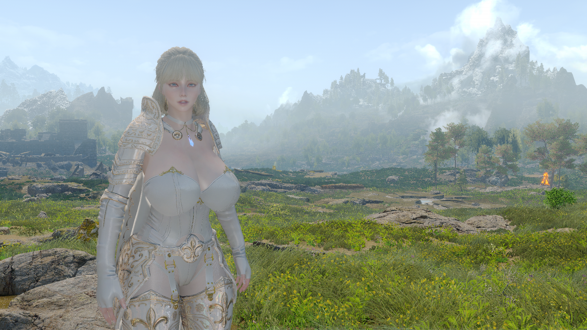

《엘더 스크롤 V: 스카이림》(The Elder Scrolls V: Skyrim)은 베데스다 게임 스튜디오가 개발하고 베데스다 소프트웍스가 발매한 액션 롤플레잉 오픈 월드 비디오 게임이다. 액션 롤플레잉 비디오 게임 시리즈 《엘더 스크롤》의 다섯 번째 작품으로, 《엘더 스크롤 4: 오블리비언》의 후속작이다. 《스카이림》은 2011년 11월 11일에 마이크로소프트 윈도우, 엑스박스 360, 플레이스테이션 3용으로 전 세계 동시 출시되었다.
《스카이림》의 주요 줄거리는 세상을 멸망시킨다는 예언 속 드래곤 알두인을 물리치는 임무를 맡은 플레이어 캐릭터 드래곤본을 중심으로 전개된다. 게임의 배경은 《오블리비언》에서 200년의 시간이 흐른 탐리엘의 최북단 지방 스카이림이다. 게임이 진행되는 동안 플레이어는 퀘스트를 완료하고 스킬을 향상시켜 캐릭터를 성장시킬 수 있다. 《엘더 스크롤》 시리즈의 높은 자유도는 《스카이림》에도 이어진다. 플레이어는 세상을 언제나 어디든 마음대로 탐험할 수 있고, 메인 퀘스트를 제한없이 늦추거나 무시할 수 있다.
《스카이림》은 이 게임에 맞추어 다시 만들어진 크리에이션 엔진을 사용하여 개발되었다. 게임 디렉터이자 총괄 프로듀서 토드 하워드는 비교를 통해 오블리비언의 시로딜 제국 지방이 흥미가 떨어진다고 생각하였고, 개발진은 이전보다 독특하고 다양한 오픈 월드를 개발하고자 하였다. 《스카이림》은 발매와 동시에 비평가들의 찬사를 받았으며, 캐릭터의 발전과 설정에 호평을 받으며 역대 최고의 비디오 게임 중 하나가 되었다. 그럼에도 주로 근접 전투와 수많은 기술적 문제에 대해서는 비판을 받았다. 게임은 발매 첫 주 동안 소매업체를 통해 700만 개 이상이 팔렸으며, 2016년 11월까지 모든 플랫폼에서 3000만 개 이상이 판매되며 역사상 가장 많이 팔린 비디오 게임 중 하나가 되었다.